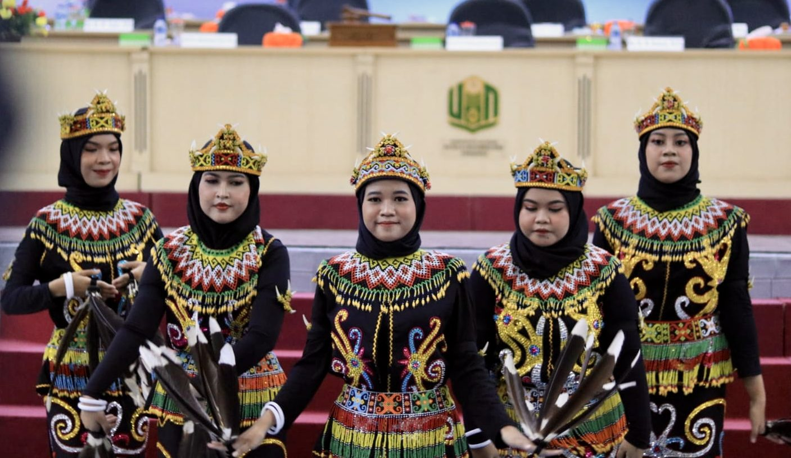
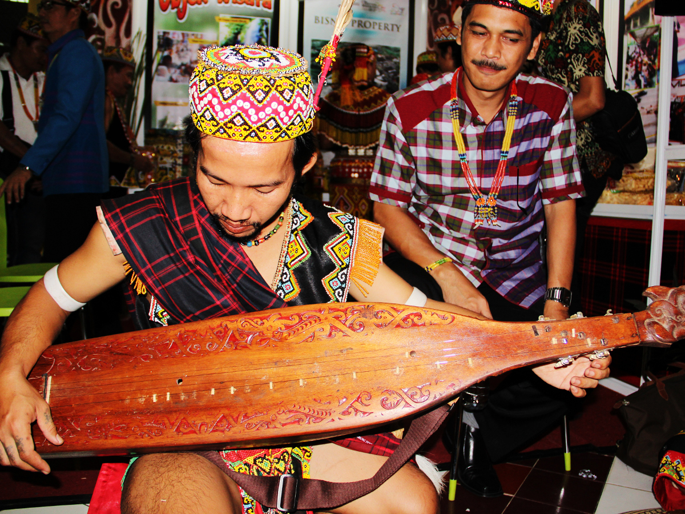

Pulau Kalimantan merupakan pulau terbesar ketiga di dunia setelah Greenland dan Papua Nugini, terletak di bagian timur Indonesia. Pulau ini terbagi menjadi tiga negara, yaitu Indonesia (sebagian besar), Malaysia (sebagian kecil di utara), dan Brunei Darussalam (sebagian kecil di utara). Sebagian besar wilayah Kalimantan adalah hutan hujan tropis yang kaya akan keanekaragaman hayati, termasuk flora dan fauna endemik. Pulau ini juga memiliki gunung-gunung, sungai-sungai besar, dan danau-danau yang memukau. Daya tarik ekowisata Kalimantan meliputi Taman Nasional Tanjung Puting yang terkenal dengan orangutan, Danau Sentarum yang merupakan cagar biosfer UNESCO, dan Gunung Kinabalu di Malaysia bagian utara. Pulau Kalimantan juga memiliki kekayaan budaya dan suku-suku asli seperti Dayak, Banjar, Kutai, dan suku-suku lainnya dengan kehidupan tradisional yang kaya. Salah satu tantangan besar di Kalimantan adalah deforestasi dan degradasi lingkungan yang disebabkan oleh kegiatan pertambangan, perkebunan, dan illegal logging yang berdampak pada ekosistem dan kehidupan masyarakat lokal.
Upacara Adat Dayak
Tari Dayak
Musik Dayak
Kriya Kalimantan